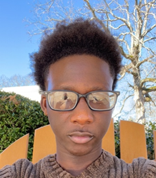

INDY-9 Blue: PureDine
CS 4850, Spring 2024
Team Members

Ibrahima Gueye
Mohamed Gothany

Mohammed Shaikh
Abstract
Finding foods that cater to specific dietary laws like Halal and Kosher can be a challenge, especially for travelers or those in unfamiliar locales. The PureDine app aims to address this challenge by enabling users to search for products and providing them with brands and items that specifically adhere to their dietary restrictions. The application will feature user profiles where individuals are able to lookup certain brands and foods to see if they follow restrictions, allowing for an inclusive experience. The goal of the app Is to provide users with the opportunity to look up certain products and check if it aligns with their dietary needs. Another goal is to create the app with a user-friendly platform to empower and boost the confidence of shoppers with dietary restrictions.